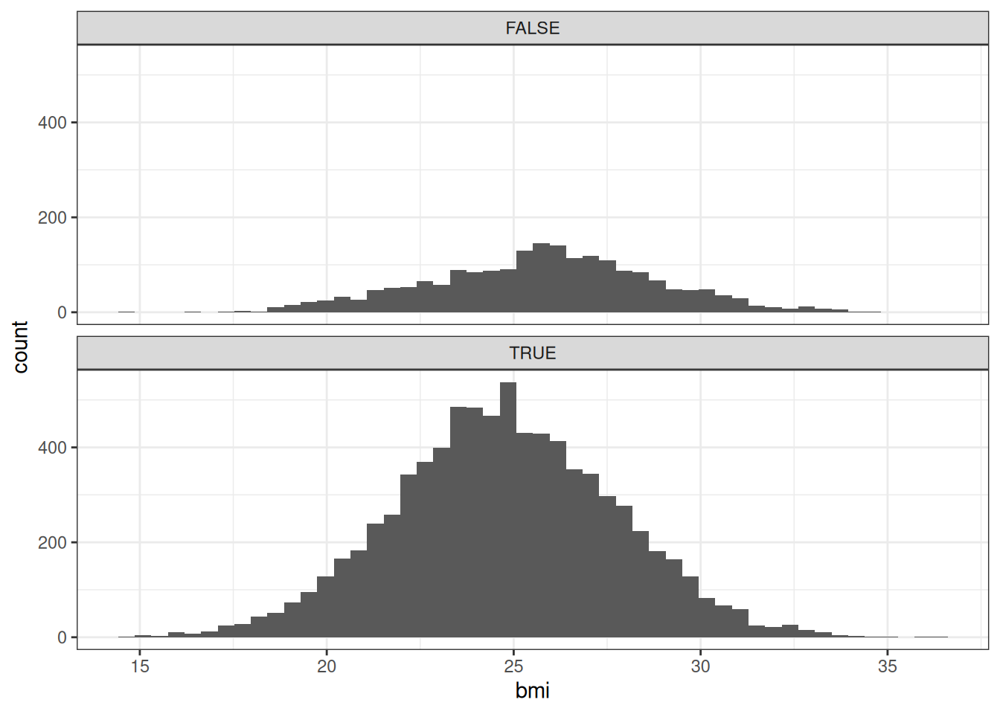
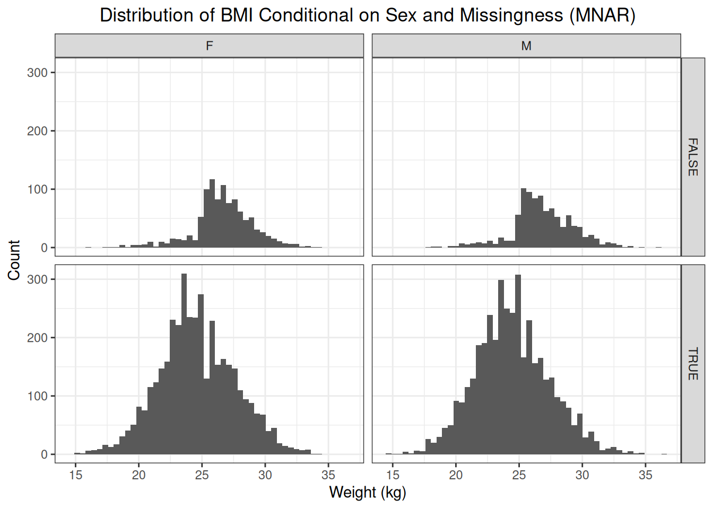
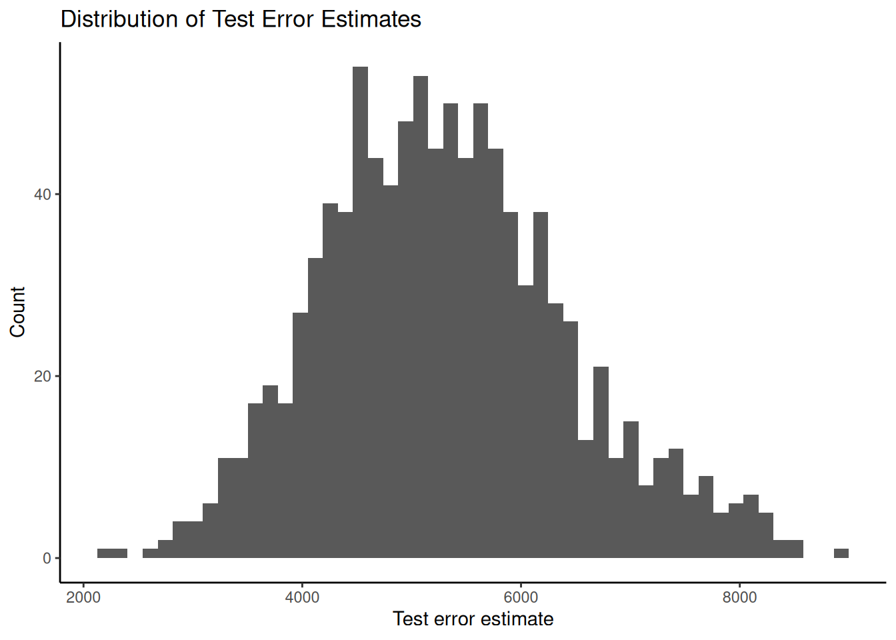
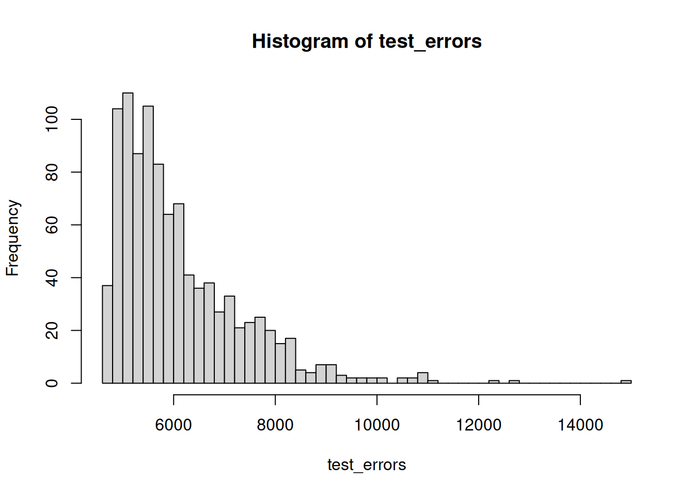

5 Relationships and Regression
5.1 Relationships
Two random variables are related if changes in one variable are consistently associated with changes in another variable. Or, in other words, when the two random variables tend to change together. We say that the two variables have a relationship (or relation).
When describing relationships between variables, we must take into account (1) the pattern, (2) the direction, and (3) the strength of the relationship. The pattern of the relationship focuses on the shape of the regression curve of the relationship. This can be linear, quadratic, exponential, etc. The relationship can be positive or negative (direction). And the relationship can be strong or weak. We will come back on the topic of strength of a relationship when discussing the Pearson correlation coefficient.
As an example, let us have a look at the Orange dataset. This dataset contains 35 observations on two random variables: age in days and circumference in millimeters. In the following figure, we see that an increase in age tends to be associated with an increase in circumference. Or, in other words, relatively low values for age tend to occur with relatively low values for circumference, and relatively high values for age tend to occur with relatively high values for circumference. This indicates a positive relationship. When drawing a smoother through the data, it seems the relationship can be described with an approximately straight line, making it a linear relationship.
ggplot(Orange, aes(x = age, y = circumference)) +
geom_point() +
geom_smooth(method = "loess", formula = "y ~ x", se = FALSE) +
labs(x = "Age (days)", y = "Circumference (mm)") +
theme_classic()
In the following sections, we will focus on statistical measures that can be used to describe linear relationships.
5.2 Pearson Correlation Coefficient
The Pearson correlation coefficient is a statistical measure that quantifies the direction and strength of a linear relationship between two variables. The sign of the Pearson correlation coefficient indicates the direction and the absolute value, ranging from \(0\) to \(1\), indicates the strength of the relationship.
5.2.1 Calculating Coefficient
The Pearson correlation coefficient is calculated as follows:
\[ \rho = \frac{Cov(X, Y)}{\sigma_{X} \sigma_{Y}} = \frac{\sigma_{XY}}{\sigma_{X} \sigma_{Y}} \]
Note that \(\rho\) denotes the population Pearson correlation coefficient, while \(r\) denotes the sample correlation coefficient. The latter is calculated as follows:
\[ r = \frac{s_{XY}}{s_{X} s_{Y}} \]
Dividing the covariance between \(X\) and \(Y\) by the product of the standard deviations of \(X\) and \(Y\) ensures that the correlation coefficient is not dependent on the scale of the variables \(X\) and \(Y\) and that \(\rho \in [-1, +1]\). If \(\rho = +1\), then all of the data falls on a single straight line with a positive slope. Some examples:
# Create a sample dataset
dat <- tibble(X = runif(n = 20, min = 10, max = 80))
dat <- add_column(dat, Y1 = 0.30*dat$X)
dat <- add_column(dat, Y2 = 3.00*dat$X)
dat <- add_column(dat, Y3 = 30.0*dat$X)# Visualize the relationships
ggplot(dat, aes(x = X)) +
geom_point(aes(y = Y1), color = "darkred") +
geom_smooth(method = "lm", aes(y = Y1), formula = "y ~ x", color = "darkred", se = F) +
geom_point(aes(y = Y2), color = "darkgreen") +
geom_smooth(method = "lm", aes(y = Y2), formula = "y ~ x", color = "darkgreen", se = F) +
geom_point(aes(y = Y3), color = "darkblue") +
geom_smooth(method = "lm", aes(y = Y3), formula = "y ~ x", color = "darkblue", se = F) +
labs(x = "X", y = "Y") +
theme_classic()
Note that these examples illustrate a functional relationship. The relationship between \(X\) and each of the \(Y\) variables (\(Y1\), \(Y2\), \(Y3\)) can be described by an equation and all the observations fall on the line of the relationship. If we compute the Pearson correlation coefficients for each of these three pairs of variables, we see that it is each time equal to \(r = +1\).
## [1] 1## [1] 1## [1] 1If we now use a negative slope, we will see that the Pearson correlation coefficient for each of these functional relationships equals \(r = -1\).
# Create a sample dataset
dat <- tibble(X = runif(n = 20, min = 10, max = 80))
dat <- add_column(dat, Y1 = -0.30*dat$X)
dat <- add_column(dat, Y2 = -3.00*dat$X)
dat <- add_column(dat, Y3 = -30.0*dat$X)# Visualize the relationships
ggplot(dat, aes(x = X)) +
geom_point(aes(y = Y1), color = "darkred") +
geom_smooth(method = "lm", aes(y = Y1), formula = "y ~ x", color = "darkred", se = F) +
geom_point(aes(y = Y2), color = "darkgreen") +
geom_smooth(method = "lm", aes(y = Y2), formula = "y ~ x", color = "darkgreen", se = F) +
geom_point(aes(y = Y3), color = "darkblue") +
geom_smooth(method = "lm", aes(y = Y3), formula = "y ~ x", color = "darkblue", se = F) +
labs(x = "X", y = "Y") +
theme_classic()
## [1] -1## [1] -1## [1] -1We see that the absolute value of the Pearson correlation coefficient equals \(1\) for the six examples. This indicates that these are very strong linear relationships. But what does it mean for a relationship between two variables to be strong?
The strength of a relationship between two variables is an indication of how much information a given value for one variables gives us about the value of the other variable. If we see that for a given value of \(X\) the range of values for \(Y\) is relatively large, and this for every value of \(X\), then we cannot say that \(X\) carries much information about \(Y\). If, however, the range of values for \(Y\) is relatively small for every value of \(X\), then we can state that \(X\) carries a lot of information about the value of \(Y\) and the relationship is quite strong.
We will showcase with a few examples.
# Create a sample dataset
dat <- tibble(X = runif(100, min = 20, max = 40))
dat <- add_column(dat, Y1 = -5 + 5*dat$X + rnorm(100, sd = 1))
dat <- add_column(dat, Y2 = -5 + 5*dat$X + rnorm(100, sd = 10))
dat <- add_column(dat, Y3 = -5 + 5*dat$X + rnorm(100, sd = 25))For the following three positive linear relationships, we see that the amount of scatter around the regression line is different for the three examples. The amount of scatter around the regression line is an indication of how much information the variable \(X\) carries about the variable \(Y\).
If we look at any given value for \(X\), we see that the range of observed values for \(Y1\) is relatively small. For \(Y2\), the range of observed \(Y2\) values is larger. And for \(Y3\), the range of observed \(Y3\) values is relatively large. Therefore, we can state that the relationship between \(X\) and \(Y1\) is strong, between \(X\) and \(Y2\) is moderate, and between \(X\) and \(Y3\) is weak.
# Visualize the relationships
ggplot(dat, aes(x = X)) +
geom_point(aes(y = Y1), color = "darkred") +
geom_abline(intercept = -5, slope = 5, color = "darkred") +
labs(x = "X", y = "Y1") +
scale_y_continuous(limits = c(60, 250)) +
theme_classic()
# Visualize the relationships
ggplot(dat, aes(x = X)) +
geom_point(aes(y = Y2), color = "darkgreen") +
geom_abline(intercept = -5, slope = 5, color = "darkgreen") +
labs(x = "X", y = "Y2") +
scale_y_continuous(limits = c(60, 250)) +
theme_classic()
# Visualize the relationships
ggplot(dat, aes(x = X)) +
geom_point(aes(y = Y3), color = "darkblue") +
geom_abline(intercept = -5, slope = 5, color = "darkblue") +
labs(x = "X", y = "Y3") +
scale_y_continuous(limits = c(60, 250)) +
theme_classic()
The absolute values of the Pearson correlation coefficient are indicative of the strength of the linear relationship. Therefore, we expect the largest Pearson correlation coefficient for \(X\) and \(Y1\), a smaller one for \(X\) and \(Y2\), and the smallest one for \(X\) and \(Y3\).
## [1] 0.9993038## [1] 0.9429303## [1] 0.7039265.2.2 Hypothesis Testing
All of the above examples on the Pearson correlation coefficient made use of samples of data to calculate the correlation. When analyzing data, we must be be aware that often we are analyzing a sample of data which is drawn from a larger population. For this population, there is a true Pearson correlation coefficient \(\rho\), which is an unknown constant. To estimate \(\rho\), we draw a random sample from the population and use an estimator to produce an estimate \(\hat{\rho}\). We have already seen the estimator in this chapter. It is:
\[ r = \frac{s_{XY}}{s_{X} s_{Y}} \]
We must remember that the Pearson correlation coefficient \(r\) is an estimator for the true Pearson correlation coefficient \(\rho\) in the population. The latter is an unknown constant. We want to estimate this unknown constant and therefore we sample data from the population and analyze this data to produce an estimate of the true value of \(\rho\).
Using this, we can perform a \(t\)-test to test for the existence of a linear relationship between two variables. The null hypothesis states that the population correlation coefficient \(\rho = 0\) and that there is no linear relationship:
\[ H_0 : \rho = 0 \]
The alternative hypothesis states:
\[ H_a : \rho \neq 0 \]
The test statistic \(T\) for this test is:
\[ T = \frac{r \cdot \sqrt{n - 2}}{\sqrt{1 - R^2}} \]
The test statistic \(T\) follows a \(t\)-distribution with \(n - 2\) degrees of freedom.
##
## Pearson's product-moment correlation
##
## data: dat$X and dat$Y1
## t = 265.15, df = 98, p-value < 2.2e-16
## alternative hypothesis: true correlation is not equal to 0
## 95 percent confidence interval:
## 0.9989636 0.9995323
## sample estimates:
## cor
## 0.9993038##
## Pearson's product-moment correlation
##
## data: dat$X and dat$Y2
## t = 28.032, df = 98, p-value < 2.2e-16
## alternative hypothesis: true correlation is not equal to 0
## 95 percent confidence interval:
## 0.9162004 0.9613063
## sample estimates:
## cor
## 0.9429303##
## Pearson's product-moment correlation
##
## data: dat$X and dat$Y3
## t = 9.811, df = 98, p-value = 3.112e-16
## alternative hypothesis: true correlation is not equal to 0
## 95 percent confidence interval:
## 0.5889364 0.7909801
## sample estimates:
## cor
## 0.703926In these three examples, we see that the \(p\)-values are all statistically significant at \(\alpha = 0.05\). If we look at the test statistic \(T\), we see that both sample size \(n\) and the estimate \(r\) affect the test statistic. We see that larger sample sizes and larger estimates of \(\rho\) result in a larger test statistic.
In the following example, we keep the random part of the relationship relatively small. So we are drawing from a population with a strong negative linear relationship. We will use varying sample sizes (from small to large).
# Create a sample dataset
n <- 3
dat <- tibble(X = runif(n, min = 20, max = 40))
dat <- add_column(dat, Y1 = -5 - 5*dat$X + rnorm(n, sd = 1))# Visualize the relationships
ggplot(dat, aes(x = X)) +
geom_point(aes(y = Y1), color = "darkred") +
geom_abline(intercept = -5, slope = -5, color = "darkred") +
theme_classic()
##
## Pearson's product-moment correlation
##
## data: dat$X and dat$Y1
## t = -120.08, df = 1, p-value = 0.005301
## alternative hypothesis: true correlation is not equal to 0
## sample estimates:
## cor
## -0.9999653# Create a sample dataset
n <- 30
dat <- tibble(X = runif(n, min = 20, max = 40))
dat <- add_column(dat, Y1 = -5 - 5*dat$X + rnorm(n, sd = 1))# Visualize the relationships
ggplot(dat, aes(x = X)) +
geom_point(aes(y = Y1), color = "darkred") +
geom_abline(intercept = -5, slope = -5, color = "darkred") +
theme_classic()
##
## Pearson's product-moment correlation
##
## data: dat$X and dat$Y1
## t = -136.97, df = 28, p-value < 2.2e-16
## alternative hypothesis: true correlation is not equal to 0
## 95 percent confidence interval:
## -0.9996494 -0.9984158
## sample estimates:
## cor
## -0.9992546# Create a sample dataset
n <- 50
dat <- tibble(X = runif(n, min = 20, max = 40))
dat <- add_column(dat, Y1 = -5 - 5*dat$X + rnorm(n, sd = 1))# Visualize the relationships
ggplot(dat, aes(x = X)) +
geom_point(aes(y = Y1), color = "darkred") +
geom_abline(intercept = -5, slope = -5, color = "darkred") +
theme_classic()
##
## Pearson's product-moment correlation
##
## data: dat$X and dat$Y1
## t = -236.6, df = 48, p-value < 2.2e-16
## alternative hypothesis: true correlation is not equal to 0
## 95 percent confidence interval:
## -0.9997581 -0.9992411
## sample estimates:
## cor
## -0.9995715We will now increae the variability around the regression line of the linear relationship.
# Create a sample dataset
n <- 3
dat <- tibble(X = runif(n, min = 20, max = 40))
dat <- add_column(dat, Y1 = -5 - 5*dat$X + rnorm(n, sd = 30))# Visualize the relationships
ggplot(dat, aes(x = X)) +
geom_point(aes(y = Y1), color = "darkred") +
geom_abline(intercept = -5, slope = -5, color = "darkred") +
theme_classic()
##
## Pearson's product-moment correlation
##
## data: dat$X and dat$Y1
## t = -3.9069, df = 1, p-value = 0.1595
## alternative hypothesis: true correlation is not equal to 0
## sample estimates:
## cor
## -0.9687692# Create a sample dataset
n <- 30
dat <- tibble(X = runif(n, min = 20, max = 40))
dat <- add_column(dat, Y1 = -5 - 5*dat$X + rnorm(n, sd = 30))# Visualize the relationships
ggplot(dat, aes(x = X)) +
geom_point(aes(y = Y1), color = "darkred") +
geom_abline(intercept = -5, slope = -5, color = "darkred") +
theme_classic()
##
## Pearson's product-moment correlation
##
## data: dat$X and dat$Y1
## t = -4.5246, df = 28, p-value = 0.0001016
## alternative hypothesis: true correlation is not equal to 0
## 95 percent confidence interval:
## -0.8185127 -0.3781540
## sample estimates:
## cor
## -0.6498847# Create a sample dataset
n <- 50
dat <- tibble(X = runif(n, min = 20, max = 40))
dat <- add_column(dat, Y1 = -5 - 5*dat$X + rnorm(n, sd = 30))# Visualize the relationships
ggplot(dat, aes(x = X)) +
geom_point(aes(y = Y1), color = "darkred") +
geom_abline(intercept = -5, slope = -5, color = "darkred") +
theme_classic()
##
## Pearson's product-moment correlation
##
## data: dat$X and dat$Y1
## t = -7.2289, df = 48, p-value = 3.281e-09
## alternative hypothesis: true correlation is not equal to 0
## 95 percent confidence interval:
## -0.8329269 -0.5551802
## sample estimates:
## cor
## -0.7219615.2.3 No Relationship
Assume there is no relationship between \(X\) and \(Y\), then the true Pearson correlation coefficient \(\rho = 0\). Therefore, the null hypothesis should not be rejected.
# Create a sample dataset
dat <- tibble(X = runif(100, min = 20, max = 40), Y = rnorm(100, mean = -5, sd = 1))# Visualize the relationships
ggplot(dat, aes(x = X, y = Y)) +
geom_point(color = "darkred") +
geom_smooth(method = "loess", formula = "y ~ x", se = F) +
theme_classic()
##
## Pearson's product-moment correlation
##
## data: dat$X and dat$Y
## t = -0.51726, df = 98, p-value = 0.6061
## alternative hypothesis: true correlation is not equal to 0
## 95 percent confidence interval:
## -0.2460756 0.1457322
## sample estimates:
## cor
## -0.05217951Another example.
# Visualize the relationships
ggplot(dat, aes(x = X, y = Y)) +
geom_point(color = "darkred") +
geom_smooth(method = "loess", formula = "y ~ x", se = F) +
theme_classic()
##
## Pearson's product-moment correlation
##
## data: dat$X and dat$Y
## t = 0.94208, df = 98, p-value = 0.3485
## alternative hypothesis: true correlation is not equal to 0
## 95 percent confidence interval:
## -0.1036095 0.2858359
## sample estimates:
## cor
## 0.094736615.2.4 Orange Dataset
If we go back to our case study from the trees dataset.
ggplot(Orange, aes(x = age, y = circumference)) +
geom_point() +
geom_smooth(method = "loess", formula = "y ~ x", se = FALSE) +
labs(x = "Age (days)", y = "Circumference (mm)") +
theme_classic()
We already described this relationship. We can now calculate the Pearson correlation coefficient manually. First, we must calculate the covariance. Let the random variable \(X\) denote the age and \(Y\) the circumference.
# Calculate the quantities required to calculate the covariance
orange_rel <- as_tibble(Orange) %>%
select(X = age, Y = circumference) %>%
mutate(X_bar = mean(X), Y_bar = mean(Y)) %>%
mutate(X_minus_X_bar = X - X_bar, Y_minus_Y_bar = Y - Y_bar) %>%
mutate(cross_product = X_minus_X_bar * Y_minus_Y_bar)
kable(orange_rel)| X | Y | X_bar | Y_bar | X_minus_X_bar | Y_minus_Y_bar | cross_product |
|---|---|---|---|---|---|---|
| 118 | 30 | 922.1429 | 115.8571 | -804.14286 | -85.8571429 | 69041.40816 |
| 484 | 58 | 922.1429 | 115.8571 | -438.14286 | -57.8571429 | 25349.69388 |
| 664 | 87 | 922.1429 | 115.8571 | -258.14286 | -28.8571429 | 7449.26531 |
| 1004 | 115 | 922.1429 | 115.8571 | 81.85714 | -0.8571429 | -70.16327 |
| 1231 | 120 | 922.1429 | 115.8571 | 308.85714 | 4.1428571 | 1279.55102 |
| 1372 | 142 | 922.1429 | 115.8571 | 449.85714 | 26.1428571 | 11760.55102 |
| 1582 | 145 | 922.1429 | 115.8571 | 659.85714 | 29.1428571 | 19230.12245 |
| 118 | 33 | 922.1429 | 115.8571 | -804.14286 | -82.8571429 | 66628.97959 |
| 484 | 69 | 922.1429 | 115.8571 | -438.14286 | -46.8571429 | 20530.12245 |
| 664 | 111 | 922.1429 | 115.8571 | -258.14286 | -4.8571429 | 1253.83673 |
| 1004 | 156 | 922.1429 | 115.8571 | 81.85714 | 40.1428571 | 3285.97959 |
| 1231 | 172 | 922.1429 | 115.8571 | 308.85714 | 56.1428571 | 17340.12245 |
| 1372 | 203 | 922.1429 | 115.8571 | 449.85714 | 87.1428571 | 39201.83673 |
| 1582 | 203 | 922.1429 | 115.8571 | 659.85714 | 87.1428571 | 57501.83673 |
| 118 | 30 | 922.1429 | 115.8571 | -804.14286 | -85.8571429 | 69041.40816 |
| 484 | 51 | 922.1429 | 115.8571 | -438.14286 | -64.8571429 | 28416.69388 |
| 664 | 75 | 922.1429 | 115.8571 | -258.14286 | -40.8571429 | 10546.97959 |
| 1004 | 108 | 922.1429 | 115.8571 | 81.85714 | -7.8571429 | -643.16327 |
| 1231 | 115 | 922.1429 | 115.8571 | 308.85714 | -0.8571429 | -264.73469 |
| 1372 | 139 | 922.1429 | 115.8571 | 449.85714 | 23.1428571 | 10410.97959 |
| 1582 | 140 | 922.1429 | 115.8571 | 659.85714 | 24.1428571 | 15930.83673 |
| 118 | 32 | 922.1429 | 115.8571 | -804.14286 | -83.8571429 | 67433.12245 |
| 484 | 62 | 922.1429 | 115.8571 | -438.14286 | -53.8571429 | 23597.12245 |
| 664 | 112 | 922.1429 | 115.8571 | -258.14286 | -3.8571429 | 995.69388 |
| 1004 | 167 | 922.1429 | 115.8571 | 81.85714 | 51.1428571 | 4186.40816 |
| 1231 | 179 | 922.1429 | 115.8571 | 308.85714 | 63.1428571 | 19502.12245 |
| 1372 | 209 | 922.1429 | 115.8571 | 449.85714 | 93.1428571 | 41900.97959 |
| 1582 | 214 | 922.1429 | 115.8571 | 659.85714 | 98.1428571 | 64760.26531 |
| 118 | 30 | 922.1429 | 115.8571 | -804.14286 | -85.8571429 | 69041.40816 |
| 484 | 49 | 922.1429 | 115.8571 | -438.14286 | -66.8571429 | 29292.97959 |
| 664 | 81 | 922.1429 | 115.8571 | -258.14286 | -34.8571429 | 8998.12245 |
| 1004 | 125 | 922.1429 | 115.8571 | 81.85714 | 9.1428571 | 748.40816 |
| 1231 | 142 | 922.1429 | 115.8571 | 308.85714 | 26.1428571 | 8074.40816 |
| 1372 | 174 | 922.1429 | 115.8571 | 449.85714 | 58.1428571 | 26155.97959 |
| 1582 | 177 | 922.1429 | 115.8571 | 659.85714 | 61.1428571 | 40345.55102 |
We can now calculate the covariance as follows:
\[ Cov(X, Y) = \frac{\sum_{i = 1}^{n} (X_i - \overline{X})(Y_i - \overline{Y})}{n - 1} \]
Which gives us:
## [1] 25831.02or:
## [1] 25831.02We can now divide the covariance between \(X\) and \(Y\) by the product of the sample standard deviations of \(X\) and \(Y\):
## [1] 0.9135189or:
## [1] 0.9135189Before interpreting the estimate of the Pearson correlation coefficient, we can perform a hypothesis test to check if it differs from 0 at a significance level of \(\alpha = 0.05\). The null and alternative hypotheses state:
\[ H_0 : \rho = 0 \text{ vs. } H_a : \rho \neq 0 \]
We perform the hypothesis test:
##
## Pearson's product-moment correlation
##
## data: Orange$age and Orange$circumference
## t = 12.9, df = 33, p-value = 1.931e-14
## alternative hypothesis: true correlation is not equal to 0
## 95 percent confidence interval:
## 0.8342364 0.9557955
## sample estimates:
## cor
## 0.9135189To conclude, we can state that the visualization of the observations and a LOESS curve indicate a positive linear relationship between age and circumference of trees. The Pearson correlation coefficient estimate of \(r = 0.9135189\) (\(p < 0.0001\)) indicates a very strong positive linear relation between age and circumference.
5.3 Spearman Rank Correlation
The Spearman rank correlation coefficient can be used for ordinal or rank-ordered data. To calculate the Spearman correlation for variables \(X\) and \(Y\), we first must obtain the rank for every value per variable. For this, we order the values from large to small and assign a rank to each value.
Let the random variable \(X\) denote the age in days and \(Y\) denote the circumference in millimeters. Let \(R_{xi}\) denote the rank for the observed value \(x_i\) and \(R_{yi}\) the rank for the observed value \(y_i\).
orange_spm <- as_tibble(Orange) %>%
select(X = age, Y = circumference) %>%
mutate(X_rank = rank(X), Y_rank = rank(Y))
kable(orange_spm)| X | Y | X_rank | Y_rank |
|---|---|---|---|
| 118 | 30 | 3 | 2.0 |
| 484 | 58 | 8 | 8.0 |
| 664 | 87 | 13 | 13.0 |
| 1004 | 115 | 18 | 17.5 |
| 1231 | 120 | 23 | 19.0 |
| 1372 | 142 | 28 | 23.5 |
| 1582 | 145 | 33 | 25.0 |
| 118 | 33 | 3 | 5.0 |
| 484 | 69 | 8 | 10.0 |
| 664 | 111 | 13 | 15.0 |
| 1004 | 156 | 18 | 26.0 |
| 1231 | 172 | 23 | 28.0 |
| 1372 | 203 | 28 | 32.5 |
| 1582 | 203 | 33 | 32.5 |
| 118 | 30 | 3 | 2.0 |
| 484 | 51 | 8 | 7.0 |
| 664 | 75 | 13 | 11.0 |
| 1004 | 108 | 18 | 14.0 |
| 1231 | 115 | 23 | 17.5 |
| 1372 | 139 | 28 | 21.0 |
| 1582 | 140 | 33 | 22.0 |
| 118 | 32 | 3 | 4.0 |
| 484 | 62 | 8 | 9.0 |
| 664 | 112 | 13 | 16.0 |
| 1004 | 167 | 18 | 27.0 |
| 1231 | 179 | 23 | 31.0 |
| 1372 | 209 | 28 | 34.0 |
| 1582 | 214 | 33 | 35.0 |
| 118 | 30 | 3 | 2.0 |
| 484 | 49 | 8 | 6.0 |
| 664 | 81 | 13 | 12.0 |
| 1004 | 125 | 18 | 20.0 |
| 1231 | 142 | 23 | 23.5 |
| 1372 | 174 | 28 | 29.0 |
| 1582 | 177 | 33 | 30.0 |
With the ranks, we can then calculate the difference in ranks for every observation as follows:
\[ d_i = R_{xi} - R_{yi} \]
Subsequently, we can calculate the sample Spearman correlation:
\[ r_s = 1 - \frac{6 \sum_{i = 1}^{n} d_{i}^{2}}{n(n^2 - 1)} \]
We can perform a hypothesis test with the following null and alternative hypotheses:
\[ H_0 : \rho = 0 \text{ vs. } H_a : \rho \neq 0 \]
Under the null hypothesis and if the sample size is large enough (\(n \geq 10\)), the Spearman rank correlation coefficient is approximately normally distributed with \(\mu_{r_s} = 0\) and \(\sigma_{r_s} = \sqrt{\frac{1}{n - 1}}\). Using this, we can calculate the test statistic \(T\):
\[ T = \frac{r_s - \mu_{r_s}}{\sigma_{r_s}} \]
We can continue with the Orange dataset:
| X | Y | X_rank | Y_rank | delta | delta_2 |
|---|---|---|---|---|---|
| 118 | 30 | 3 | 2.0 | 1.0 | 1.00 |
| 484 | 58 | 8 | 8.0 | 0.0 | 0.00 |
| 664 | 87 | 13 | 13.0 | 0.0 | 0.00 |
| 1004 | 115 | 18 | 17.5 | 0.5 | 0.25 |
| 1231 | 120 | 23 | 19.0 | 4.0 | 16.00 |
| 1372 | 142 | 28 | 23.5 | 4.5 | 20.25 |
| 1582 | 145 | 33 | 25.0 | 8.0 | 64.00 |
| 118 | 33 | 3 | 5.0 | -2.0 | 4.00 |
| 484 | 69 | 8 | 10.0 | -2.0 | 4.00 |
| 664 | 111 | 13 | 15.0 | -2.0 | 4.00 |
| 1004 | 156 | 18 | 26.0 | -8.0 | 64.00 |
| 1231 | 172 | 23 | 28.0 | -5.0 | 25.00 |
| 1372 | 203 | 28 | 32.5 | -4.5 | 20.25 |
| 1582 | 203 | 33 | 32.5 | 0.5 | 0.25 |
| 118 | 30 | 3 | 2.0 | 1.0 | 1.00 |
| 484 | 51 | 8 | 7.0 | 1.0 | 1.00 |
| 664 | 75 | 13 | 11.0 | 2.0 | 4.00 |
| 1004 | 108 | 18 | 14.0 | 4.0 | 16.00 |
| 1231 | 115 | 23 | 17.5 | 5.5 | 30.25 |
| 1372 | 139 | 28 | 21.0 | 7.0 | 49.00 |
| 1582 | 140 | 33 | 22.0 | 11.0 | 121.00 |
| 118 | 32 | 3 | 4.0 | -1.0 | 1.00 |
| 484 | 62 | 8 | 9.0 | -1.0 | 1.00 |
| 664 | 112 | 13 | 16.0 | -3.0 | 9.00 |
| 1004 | 167 | 18 | 27.0 | -9.0 | 81.00 |
| 1231 | 179 | 23 | 31.0 | -8.0 | 64.00 |
| 1372 | 209 | 28 | 34.0 | -6.0 | 36.00 |
| 1582 | 214 | 33 | 35.0 | -2.0 | 4.00 |
| 118 | 30 | 3 | 2.0 | 1.0 | 1.00 |
| 484 | 49 | 8 | 6.0 | 2.0 | 4.00 |
| 664 | 81 | 13 | 12.0 | 1.0 | 1.00 |
| 1004 | 125 | 18 | 20.0 | -2.0 | 4.00 |
| 1231 | 142 | 23 | 23.5 | -0.5 | 0.25 |
| 1372 | 174 | 28 | 29.0 | -1.0 | 1.00 |
| 1582 | 177 | 33 | 30.0 | 3.0 | 9.00 |
We now calculate the sample Spearman rank correlation coefficient:
## [1] 0.9073529or:
## [1] 0.9064294We can now continue and calculate the test statistic \(T\). First, we must calculate the parameters of the null distribution:
\[ \mu_{r_s} = 0 \]
and:
\[ \sigma_{r_s} = \sqrt{\frac{1}{n - 1}} = \sqrt{\frac{1}{35 - 1}} = 0.1714986 \]
Our test statistic \(T\) is:
\[ T = \frac{r_s - \mu_{r_s}}{\sigma_{r_s}} = \frac{0.9073529 - 0}{0.1714986} = 5.290731 \]
We calculate the \(p\)-value as follows:
# Calculate the statistics for the null distribution
T_mu <- 0
T_se <- sqrt(1 / (35 - 1))
T_stat <- (0.9073529 - T_mu) / T_se
p_val <- pnorm(q = T_stat, lower.tail = FALSE)*2
p_val## [1] 1.218284e-07Or we can also calculate as follows:
# Calculate the test statistic
cor.test(x = orange_spm$X, y = orange_spm$Y, method = "spearman", exact = F)##
## Spearman's rank correlation rho
##
## data: orange_spm$X and orange_spm$Y
## S = 668.09, p-value = 6.712e-14
## alternative hypothesis: true rho is not equal to 0
## sample estimates:
## rho
## 0.9064294Using a sample dataset:
## # A tibble: 15 2
## X Y
## <dbl> <dbl>
## 1 0.396 -0.759
## 2 0.379 0.0820
## 3 -1.18 -0.347
## 4 0.652 0.243
## 5 1.47 1.68
## 6 -1.06 0.724
## 7 0.915 -0.711
## 8 0.900 0.486
## 9 0.564 0.822
## 10 -0.376 0.492
## 11 -1.00 0.308
## 12 0.423 -0.867
## 13 -0.0149 -0.0605
## 14 -2.58 1.44
## 15 0.318 1.46dat <- dat %>%
mutate(X_rank = rank(X), Y_rank = rank(Y)) %>%
mutate(delta = X_rank - Y_rank, delta_2 = delta^2)## [1] -0.07142857or:
## [1] -0.07142857# Calculate the statistics for the null distribution
T_mu <- 0
T_se <- sqrt(1 / (nrow(dat) - 1))
T_stat <- (0.15 - T_mu) / T_se
p_val <- pnorm(q = T_stat, lower.tail = FALSE)*2
p_val## [1] 0.5746281##
## Spearman's rank correlation rho
##
## data: dat$X and dat$Y
## S = 600, p-value = 0.8003
## alternative hypothesis: true rho is not equal to 0
## sample estimates:
## rho
## -0.07142857